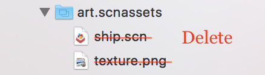

Overview
The hierarchical documentation documents how to build many of the functionalities found in the AR Tour.
Contents
Getting Started - Project Creation and Environment Configuration
Creating the project
ARKit projects requires Xcode 9.0 and above.
- Launch Xcode and select Create a new Xcode project from the Xcode welcome screen, or select File → New → Project...
- Choose iOS → Application → Augmented Reality App and click next.

- In the Choose options for your new project dialog, choose SceneKit as the Content
Technology

Configuring Your Environment
Creating a new ARKit project generates a sample application, so some cleanup is required.
- In ViewController.swift, delete the sample code from
viewDidLoad().
- Delete everything inside the art.scnassets folder.

Creating an AR Session
ARSession is an object shared by views that require motion tracking and image processing. Your application will use an ARSCNView to display 3D SceneKit objects in the camera view.
ARSession must be configured before it can be run by ARSCNView. To do this, create an instance of ARWorldTrackingConfiguration and configure it to detect horizontal planes. Then the SceneView can run the ARSession.
This configuration can be achieved by adding the following code to the viewWillAppear()
method of your ViewController class.
override func viewWillAppear(_ animated: Bool) {
super.viewWillAppear(animated)
// Create a session configuration
let configuration = ARWorldTrackingConfiguration()
// Detect horizontal planes in the scene
configuration.planeDetection = .horizontal
// Run the view's session
sceneView.session.run(configuration)
}
Contextual Hints
Displaying help messages and hints in AR/VR is difficult to do without disrupting the user's experience. One approach is to show context-sensitive hints in an overlay. This approach has two advantages: the user is unlikely to miss these hints, and they don't disrupt the current application flow. One disadvantage to this approach is that is can be difficult to determine when to display these types of hints.

Creating an Overlay Hint
Recall that an ARSCNView contains a SceneKit scene. All SceneKit scenes contain a overlaySKScene,
perfect for overlaying 2D SpriteKit content. It's commonly used in game development to implement
heads-up displays, but can just as easily be used to create overlay labels.
Create your overlaySKScene in your viewDidLoad() method. You'll want to
fade this overlay in and out. Creation and animation are discussed below.
override func viewDidLoad() {
...
sceneView.overlaySKScene = createOverlayHintLabel(withText: "Your hint text here")
fadeNodeInAndOut(node: sceneView.overlaySKScene!, initialDelay: 2.0, fadeInDuration: 1.0, displayDuration: 6.0, fadeOutDuration: 1.0)
...
}
Making the Overlay
This function returns an SKScene which contains a SKLabelNode that wraps the string
withText, similar to the one shown above.
// Creates an overlay containing a label with hint text and a translucent background
func createOverlayHintLabel(withText: String) -> SKScene {
// Create an overlay banner to be positioned in the middle of the SceneView.
let overlayScene = SKScene(size: sceneView.bounds.size)
overlayScene.scaleMode = .resizeFill
// Configure the hint label
let hintLabel = SKLabelNode(text: withText)
hintLabel.fontSize = 40
hintLabel.verticalAlignmentMode = .center
hintLabel.preferredMaxLayoutWidth = overlayScene.size.width
hintLabel.numberOfLines = 2
hintLabel.lineBreakMode = .byWordWrapping
// Configure the label background
let labelBackground = SKShapeNode()
// Give the background a slightly larger bounding rectangle in order to give the text a margin.
let labelBackgroundSizeRect = hintLabel.frame.insetBy(dx: -10, dy: -10)
labelBackground.path = CGPath(roundedRect: labelBackgroundSizeRect, cornerWidth: 5, cornerHeight: 5, transform: nil)
labelBackground.position = CGPoint(x: sceneView.frame.midX, y: sceneView.frame.midY)
labelBackground.strokeColor = UIColor.clear
labelBackground.fillColor = UIColor.init(red: 0.0, green: 0.0, blue: 0.0, alpha: 0.96)
labelBackground.addChild(hintLabel)
// Add the overlay and its contents to the scene.
overlayScene.addChild(labelBackground)
overlayScene.alpha = 0
return overlayScene
}
Displaying the Overlay
Animating hints makes your app look more polished, and it makes displaying hints less jarring to the
user. This function fades in a SKNode, displays it for displayDuration seconds. This
function can be reused with any SKNode, not just an overlay.
func fadeNodeInAndOut(node: SKNode, initialDelay: Double, fadeInDuration: Double, displayDuration: Double, fadeOutDuration: Double) {
// Fade in the label
node.run(SKAction.sequence([
.wait(forDuration: initialDelay),
.fadeIn(withDuration: fadeInDuration)]))
// Wait and fade out the label
node.run(SKAction.sequence([
.wait(forDuration: displayDuration),
.fadeOut(withDuration: fadeOutDuration),
.removeFromParent()]))
}
Location-Based AR
VT AR Tour pulls lat/long coordinates from an API and translates them into a local coordinate system in order to render objects at their "real" positions in the virtual coordinate system. This processing is very tricky, but if done correctly, objects can be rendered in their real-world locations with a surprising level of accuracy!

Getting the User's Location
A location-based AR App needs the highest degree of accuracy in order to correctly map real-world coordinates to virtual ones. First get permission from the user, then configure the CoreLocationManager to use the best accuracy possible.
Make sure you have a strong reference to CLLocationManager, then get permission and configure the location manger after the view has loaded.
// A strong reference to CLLocationManager is required by the CoreLocation API
var locationManager = CLLocationManager()
override func viewDidLoad() {
...
// User must enable location services to use this app
if !CLLocationManager.locationServicesEnabled() {
showAlertMessage(title: "Location Services Disabled", message: "You must enable location services to use this app")
return
}
// Get the user's location
locationManager.requestWhenInUseAuthorization()
getLocation()
...
}
// Gets the user's location and reports all device movement
func getLocation() {
// The user has not authorized location monitoring
if (CLLocationManager.authorizationStatus() == .denied) {
showAlertMessage(title: "App Not Authorized", message: "Unable to determine your location: please allow VT AR Tour to use your location.")
// Try to get location authorization again
locationManager.requestWhenInUseAuthorization()
}
locationManager.delegate = self
// Report ALL device movement
locationManager.distanceFilter = kCLDistanceFilterNone
// Get the highest possible degree of accuracy
locationManager.desiredAccuracy = kCLLocationAccuracyBest
locationManager.startUpdatingLocation()
locationManager.startUpdatingHeading()
}
Setting up Your Coordinate System
When an ARSession is launched, the AR coordinate system is based on the angle of the camera upon launch by default. Luckily, ARKit can base the coordinate system on gravity and the compass heading for a more real-world-like coordinate system.
When you create your ARWorldTrackingConfiguration, be sure to correctly set the world
alignment.
override func viewWillAppear(_ animated: Bool) {
super.viewWillAppear(animated)
let configuration = ARWorldTrackingConfiguration()
// Defines the ARSession's coordinate system based on gravity and the compass heading in the device. Note: THIS IS CRITICALLY IMPORTANT for location-based AR applications
configuration.worldAlignment = .gravityAndHeading
...
// Run the view's session
sceneView.session.run(configuration)
}
Handling Location Updates
As the user moves around, the LocationManager will notify your application with location updates. You
should update the location of each object in the scene every time this method is called. Here, those
updates are handled in processBuilding().
// New location data is available
func locationManager(_ manager: CLLocationManager, didUpdateLocations locations: [CLLocation]) {
// Must wait until at least one heading update comes through. If we proceed before this, our coordinate system won't be set up correctly
guard (manager.heading?.magneticHeading) != nil else { return }
// Don't process any further without the user's current location
guard let currentLocation: CLLocation = locations.last else { return }
// Fetch the VT Buildings JSON if necessary
if jsonInDocumentDirectory == nil {
jsonInDocumentDirectory = getVTBuildingsJSON()
}
if let jsonDataFromApi = jsonInDocumentDirectory {
// Getting the JSON was successful
do {
let jsonArray = try JSONSerialization.jsonObject(with: jsonDataFromApi, options: .mutableContainers) as! NSArray
for building in jsonArray {
// Update the location and appearance of each buildingNode as necessary
processBuilding(building, currentLocation)
}
} catch let error as NSError {
showAlertMessage(title: "Error in JSON serialization", message: error.localizedDescription)
}
}
}
Processing Buildings
We create and render building nodes the first time we receive a location update. Afterwards, we update the position and appearance of the building nodes with each location update.
The rest of this section will focus on each step of processing, updating, and rendering buildings.
Processing Buildings - Computing the Distance Between Coordinates
First, we determine if the building is close enough to the user to bother processing. If the building is more than a quarter mile from the user, we don't waste CPU cycles updating nodes that are too far for the user to see.
The distanceBetweenPointsInMiles() function uses the Haversine Formula to
calculate the distance between two latitude/longitude points. Here, the points are the user's
location and each building's location.
// MARK: - Degrees <--> Radians conversion functions
func degreesToRadians(_ degrees: Double) -> Double { return degrees * .pi / 180.0 }
func radiansToDegrees(_ radians: Double) -> Double { return radians * 180.0 / .pi }
// ----------------------------------------------
// MARK: - Position math (lat/long; matrix, etc)
// ----------------------------------------------
// MARK: Haversine formula
// Calculates the distance between two lat/long coordinates in miles.
// Modified from https://gist.github.com/Jamonek/16ecda78cebcd0da5862
func distanceBetweenPointsInMiles(lat1: Double, long1: Double, lat2: Double, long2: Double) -> Double {
let radius: Double = 3959.0 // Average radius of the Earth in miles
let deltaP = degreesToRadians(lat2) - degreesToRadians(lat1)
let deltaL = degreesToRadians(long2) - degreesToRadians(long1)
let a = sin(deltaP/2) * sin(deltaP/2) + cos(degreesToRadians(lat1)) * cos(degreesToRadians(lat2)) * sin(deltaL/2) * sin(deltaL/2)
let c = 2 * atan2(sqrt(a), sqrt(1-a))
let d = radius * c
return d
}
Processing Buildings - Creating Building Label Nodes
Once we've computed a building's distance from the user, we create a SCNNode containing the building's name. Later, we will add this node to the scene.
createBuildingLabelNode() creates a SCNNode that displays the building's name. This
takes a few steps:
- Call
getARCoordinateOfBuilding(), which translates the building's real-world coordinates to its corresponding AR coordinates. - Get the (x, y, z) coordinates from the matrix's 3rd column (column 3 represents the node's position in 3D space) and wrap the coordinates into a SCNVector3. SCNNode expects a SCNVector3 type in order to set its position.
- Set the node's properties.
Step 1 is nontrivial, so it will be discussed in detail below. The numerical labels that follow correspond the the numbers above.
1. getARCoordinateOfBuilding()
Check-in: At this point in computation, the application knows the user's lat/long the building's lat/long, and the distance of the building from the user.
We now compute the bearing between the building and the user in order to correctly position the building in the AR coordinate system. Once obtained, we use the bearing to rotate the matrix around the Y-axis (i.e. the ground) to place the building node in its position relative to the user's camera.
At this point, since things are beginning to get fairly complicated, we abstracted our matrix
operations into their own class, MatrixHelper, in order to shorten our functions. You
can view the MatrixHelper implementation here.
The code that follows contains everything required to implement
getARCoordinateOfBuilding().
// Converts a CLLocation object to a matrix_float4x4 with the 3rd column representing the location in SCNKit coordinates
func getARCoordinateOfBuilding(userLocation: CLLocation, buildingLocation: CLLocation, distanceFromUserInMiles: Double) -> matrix_float4x4 {
let bearing = getBearingBetweenPoints(point1: userLocation, point2: buildingLocation)
let originTransform = matrix_identity_float4x4
// Create a transform with a translation of distance meters away
let milesPerMeter = 1609.344
let distanceInMeters = distanceFromUserInMiles * milesPerMeter
// Matrix that will hold the position of the building in AR coordinates
var translationMatrix = matrix_identity_float4x4
translationMatrix.columns.3.z = -1 * Float(distanceInMeters)
// Rotate the position matrix
let rotationMatrix = MatrixHelper.rotateMatrixAroundY(degrees: Float(bearing * -1), matrix: translationMatrix)
// Multiply the rotation by the translation
let transformMatrix = simd_mul(rotationMatrix, translationMatrix)
// Multiply the origin by the translation to get the coordinates
return simd_mul(originTransform, transformMatrix)
}
// Adapted from https://stackoverflow.com/questions/26998029/calculating-bearing-between-two-cllocation-points-in-swift
func getBearingBetweenPoints(point1 : CLLocation, point2 : CLLocation) -> Double {
let lat1 = degreesToRadians(point1.coordinate.latitude)
let lon1 = degreesToRadians(point1.coordinate.longitude)
let lat2 = degreesToRadians(point2.coordinate.latitude)
let lon2 = degreesToRadians(point2.coordinate.longitude)
let dLon = lon2 - lon1
let y = sin(dLon) * cos(lat2)
let x = cos(lat1) * sin(lat2) - sin(lat1) * cos(lat2) * cos(dLon)
let radiansBearing = atan2(y, x)
return radiansToDegrees(radiansBearing)
}
Steps 2 and 3 are self-explanatory and can be tailored to your own application as you wish.
Finally, after all that math, the building label node has been created! Later, we will discuss adding the node to the scene.
Processing Buildings - Creating Building Detail Nodes
When the user is close to a building, we render a SCNNode that contains a BuildingDetailsView. The BuildingDetailsNode is a SCNNode that contains a BuildingDetailsView. This view is exactly the same as the one that is shown to the user when the user taps on a building name to view the building details.
Creating the populated BuildingDetailsSCNNode takes a few steps.
createBuildingDetailsViewControllerFromDict()
First, we create the BuildingDetails xib and the BuildingDetailsViewController. The BuildingDetails view is described by a xib file in order to be reusable both in BuildingDetails nodes and the BuildingDetailsView.
//
// BuildingDetailsViewController.swift
// VT AR Tour
//
// Created by Patrick Gatewood on 11/21/17.
// Copyright © 2017 Patrick Gatewood. All rights reserved.
//
import UIKit
protocol BuildingDetailsDelegate {
func closeBuildingDetailsView(viewController: UIViewController)
}
class BuildingDetailsViewController: UIViewController {
@IBOutlet var buildingNameLabel: UILabel!
@IBOutlet var buildingImageview: UIImageView!
@IBOutlet var scrollView: UIScrollView!
@IBOutlet var buildingDescriptionLabel: UILabel!
@IBOutlet var closeButton: UIButton!
var delegate: BuildingDetailsDelegate?
// Closes the BuildingDetailsView
@IBAction func close(_ sender: UIButton) {
if let buildingDetailsDelegate = delegate {
buildingDetailsDelegate.closeBuildingDetailsView(viewController: self)
}
}
// Give the view rounded corners
override func viewDidLoad() {
view.layer.cornerRadius = 20;
view.layer.masksToBounds = true;
}
}
It is worth noting here that the BuildingDetailsViewController defines its own protocol. This allows
its delegate to handle removing the ViewController from its parent, as that functionality is not
supported without delegation. The implementation in ARViewController.swift simply
animates out the ViewController's view and removes the ViewController from itself on completion.
Once we've created the ViewController, we simply populate its view with data from a Building dictionary. This gives us the full implementation of createBuildingDetailsViewControllerFromDict().
// Create a BuildingDetailsController and populate it asynchronously with data from the API
func createBuildingDetailsViewControllerFromDict(buildingDict: NSMutableDictionary?) -> BuildingDetailsViewController {
// Create a new ViewController and pass it the selected building's data
let buildingDetailViewController = BuildingDetailsViewController.init(nibName: "BuildingDetails", bundle: nil)
buildingDetailViewController.delegate = self
// NOTE: ViewController.view must be referenced at least once before referencing ANY IBOutlets in the ViewController. Referencing the `view` property implicity calls loadView(), which should never be called directly by the programmer.
let _: UIView! = buildingDetailViewController.view
// Display the building name
buildingDetailViewController.buildingNameLabel.text = buildingDict?.value(forKey: "name") as? String
// Get the building's image asynchronously and display it once available
if let imageAddress = buildingDict?.value(forKey: "imageUrl") as? String,
let buildingImageUrl = URL(string: imageAddress) {
downloadAndDisplayImageAsync(url: buildingImageUrl, imageView: buildingDetailViewController.buildingImageview)
}
// Get the building's description asynchronously and display it once available
if let descriptionAddress = buildingDict?.value(forKey: "descriptionUrl") as? String,
let buildingDescriptionUrl = URL(string: descriptionAddress) {
downloadAndDisplayLabelTextAsync(url: buildingDescriptionUrl, label: buildingDetailViewController.buildingDescriptionLabel)
}
return buildingDetailViewController
}
Note that downloading and displaying data from the API is done asynchronously. This will be discussed later.
Building Detail Nodes - What's Left?
The rest of this function is mostly configuration specific to this implementation. The most important line is highlighted. Here, we set the SCNPlane's first material to the BuildingDetailViewController's view. This whole configuration effectively renders a 2-dimensional View in our 3D ARSCNView.
Processing Buildings - Adding Nodes to the Scene
The two long sections above described creating the different types of nodes to be rendered in the scene. This section will discuss adding the nodes to the scene and the logic used to determine which node to display.
Finally, we're ready to add nodes to the scene. First, we check if the nodes are already in the scene. If not, we add them. This handles initially adding nodes to the scene on launch. In addition, it allows the app to add new nodes for buildings that were once too far away. So, if the user starts walking across campus, the app will dynamically render new buildings as they come within range.
These checks determine whether to display a Building Label node vs. a Building Details node. If the user is within range, the building label node is rendered. Otherwise, the label is rendered.
With that, processing buildings is complete! In order for the nodes to maintain a high level of location accuracy, this is done with every location update. Further optimizations are always possible, however ruling out far-away buildings is enough to make the app run smoothly.git s
Back to topAsynchronous Data Downloading
Earlier, when creating a building details view, we downloaded and displayed building images and their descriptions asynchronously in order to not hang the main thread. Otherwise, the application would completely freeze while waiting for a potentially large image to download!
To prevent this, we use an escaped closure. This technique allows a closure to be passed into a function as a parameter, but not executed until the function completes. We use this strategy to show a loading indicator in the UI, download the contents of a url, and populate the UI on completion.
Showing the Loading Indicator
This function can show a loading indicator in the center of any subclass of UIView.
// Create loading indicator and add it to the passed in view
func createAndShowLoadingIndicator(addToView: UIView) -> UIActivityIndicatorView {
let loadingIndicator = UIActivityIndicatorView()
// Add the loading indicator at the center of the view and begin the loading animation
loadingIndicator.center = CGPoint(x: addToView.frame.size.width / 2,
y: addToView.frame.size.height / 2);
addToView.addSubview(loadingIndicator)
loadingIndicator.startAnimating()
return loadingIndicator
}
Downloading and Displaying Data
By abstracting out the completion handler into an escaped closure, this function can be reused
anywhere that requires an API call. Again, this function simply downloads data from a URL and
executes the completion closure once the data has been downloaded.
// Downloads data on a background thread and executes the passed-in closure on completion
func getDataFromUrlAsync(url: URL, completion: @escaping (Data?, URLResponse?, Error?) -> ()) {
URLSession.shared.dataTask(with: url) { data, response, error in
completion(data, response, error)
}.resume()
}
We reuse the above function for both downloading long strings and large images.
// Download a String on a background thread and display it in the passed in UILabel once completed
func downloadAndDisplayLabelTextAsync(url: URL, label: UILabel) {
var text: String?
// Download the text and display it on completion
getDataFromUrlAsync(url: url) { (data, response, error) in
if error != nil {
// Download failed
text = "No data found"
} else if let data = data {
text = String(data: data, encoding: .utf8)
}
// Display the label
DispatchQueue.main.async {
label.text = text
}
}
}
// Download an image on a background thread and display it in the passed in UIImageView once completed
func downloadAndDisplayImageAsync(url: URL, imageView: UIImageView) {
var image: UIImage?
let loadingIndicator = createAndShowLoadingIndicator(addToView: imageView)
// Download the image and display it on completion
getDataFromUrlAsync(url: url) { (data, response, error) in
if error != nil {
// Download failed
image = UIImage(named: "no-image")
} else if let data = data {
image = UIImage(data: data)
}
// Display the image
DispatchQueue.main.async {
loadingIndicator.stopAnimating()
loadingIndicator.removeFromSuperview()
imageView.image = image
}
}
}
With that, data is downloaded asynchronously and doesn't slow down the GUI thread!
Back to topLeaving an AR View
If your application is more than just one ARSCNView, it may make sense to allow your user to escape the ARSCNView and go back to the previous view. There are two easy ways to do this: a back button and a UINavigationController.
Option 1: Back Button
A back button is familiar to all users. In order to prevent disrupting your user's experience, you'll only want to show it for a few seconds.
Button Setup
Call setupBackButton() in viewWillAppear() to create a back button and
display it for a few seconds.
// Global reference to backButton
var backButton: UIImageView = UIImageView(image: UIImage(named: "back-icon"))
// Creates a back button and adds it to the scene
func setupBackButton() {
// Position the button right under the status bar
backButton.frame = CGRect(x: 25, y: 40, width: 35, height: 35)
view.addSubview(backButton)
// Fade out the back button after a few seconds.
UIView.animateKeyframes(withDuration: 1.0, delay: 6.0, options: .allowUserInteraction, animations: {
self.backButton.alpha = 0
}, completion: { (finished: Bool) in
self.backButton.isHidden = true
})
}
Detecting a Back Button Press
You will likely be using hit tests (as learned in the models and physics tutorial to determine if the user tapped an object in the scene. Rather than adding a TapGestureRecognizer to our back button and overcomplicating the way our application handles tap gestures, we can add our back button logic to our ARSCNView's tap gesture handling method.
Add this code to your tap handling method to return to the previous ViewController when the user taps the back button.
@IBAction func userTappedScreen(_ sender: UITapGestureRecognizer) {
let screenTapPoint: CGPoint = sender.location(in: self.view)
// User tapped the back button
if backButton.frame.contains(screenTapPoint) && !backButton.isHidden {
navigationController?.popViewController(animated: true)
return
}
...
// If the back button is hidden and your hit test has no results... show the back button for a few seconds
{
let animationTime = 1.0
let animationDelay = 3.0
// Display back button for a few seconds
UIView.animate(withDuration: animationTime, delay: 0, animations: {
self.backButton.alpha = 1.0
}, completion:{ (finished: Bool) in
self.backButton.isHidden = false
})
// Fade back out
UIView.animate(withDuration: animationTime, delay: animationDelay, options: UIViewAnimationOptions.allowUserInteraction, animations: {
self.backButton.alpha = 0
}, completion: { (finished: Bool) in
self.backButton.isHidden = true
})
}
}
Option 2: UINavigationController
If your ARSCNView is the child of a UINavigationController, you can hide the bar and use UINavigationController's built-in "edge-pan to go back" gesture.
In your viewDidLoad() method, set the interactivePopGestureRecognizer
Delegate to your ARViewController. This lets your ARSCNView pass edge-pad gestures to the view's
NavigationController.
override func viewDidLoad() {
...
// Required for "swipe right to go back" gesture with a hidden navigation bar
navigationController?.interactivePopGestureRecognizer?.delegate = self
...
}